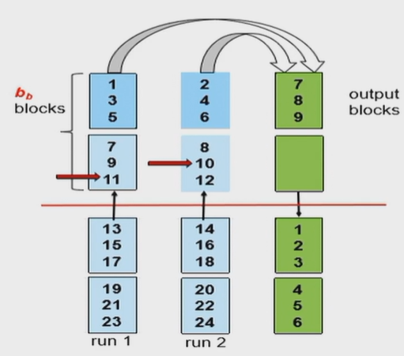
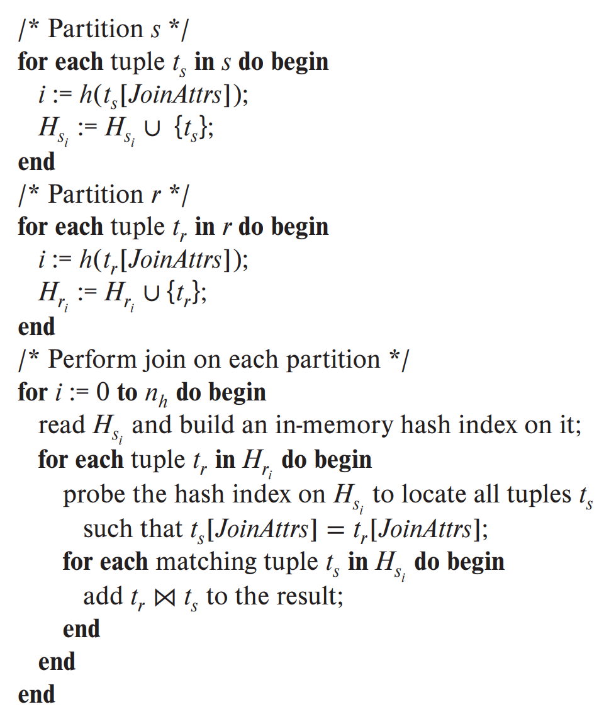
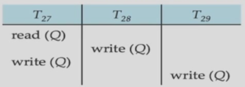
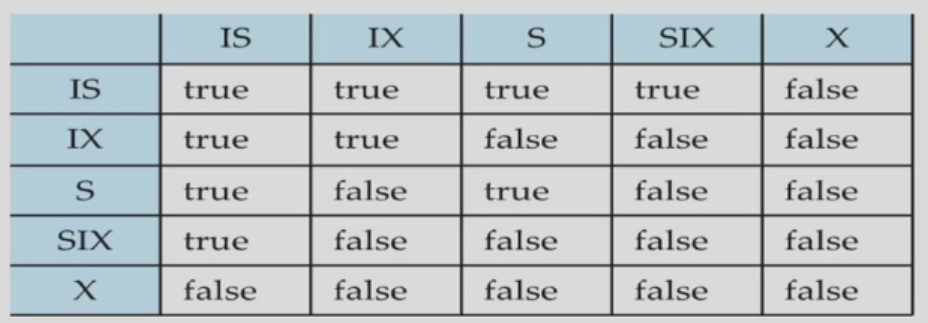
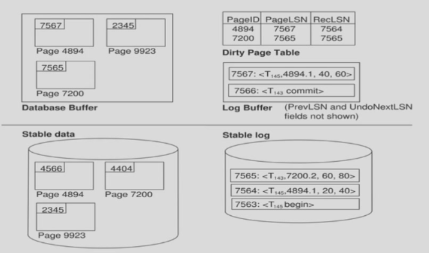

sql
字符串匹配
用 like 做匹配
eacape '\' 可以使用 \ 来做转义字符
select dept name
from department
where building like '%Watson\\%' escape '\';
匹配了中间有形如 Watson\ 的串
排序
select *
from instructor
order by salary desc, name asc
用 desc 表示降序, asc 表示升序
交并差集
使用 intersect, union, except 会自动去除重复键值
所以要保留重复, 需要 intersect all, union all, except all
聚合函数
类似 avg, min, max, sum, count 的统计所有值的函数
插入
可以把查询的表整个插入:
insert into instructor
select ID, name, dept name, 18000
from student
where dept name = 'Music' and tot cred > 144;
有个问题, 我们是应该做完整个查询再整个插入, 还是一边查询一边插入?
注意这样的语句:
insert into student
select *
from student
如果没有 primary key, 这个表会允许完全相同的两个元组存在, 那么如果一边查询一边插入, 会查到第一个元组并插入, 此时表的第二个元组变成了这个元组的一个副本; 查询第二个元组时还是查到这个副本, 并插入到第三个元组的位置, 以此类推, 就插入了无穷个元组
所以我们应该做完整个查询再整个插入
同时 priamry key 是必不可少的
relation
BCNF
BCNF 什么时候依赖保持?
\(JK\to L\)
\(L\to K\)
\(JK, JL\) 是 candidate key
无论如何分解成 BCNF 都会失去 \(JK\to L\)
-
非平凡依赖组成的有向图是森林是分解成 BCNF 后依赖保持的什么条件?
充分非必要
考虑一个 \(3\) 元环
\(A\to B,B\to C,C\to A\)
本身就是 BCNF, 自然地有依赖保持
-
非平凡依赖组成的有向图不存在一个点入度为 \(2\) 或以上是分解成 BCNF 后依赖保持的什么条件?
充分非必要
考虑 \(A\to B, B\to A\)
每个点度为 \(2\), 但是本身是 BCNF
3NF
如果左边 \(\alpha\) 不是 superkey, 右边 \(\beta\) 一定是某个 candidate key 的一部分
Query Processing
select
linear search
index serach
on equality
等值查找
-
如果使用 primary key 读取一个数据:
\[(h_i+1)(t_T+t_S)\]如果使用 primary key 读取若干个数据:
\[h_i(t_T+t_S)+b*t_T+t_S\]因为数据是连续的, 只需要顺序遍历链表的 \(b\) 个 block 读取所有数据
-
如果使用 secondary 读取一个数据:
\[(h_i+1)(t_T+t_S)\]如果使用 secondary key 读取若干个数据:
\[(h_i+m+n)(t_T+t_S)\]因为数据可能是不连续的
假设每个数据都在不同的块里, 一共 \(n\) 条数据
并且 \(n\) 个指针存在 \(m\) 个块里
index serach involving range comparisons
范围查找
-
如果使用 primary key 读取范围内数据:
\[h_i(t_T+t_S)+b*t_T+t_S\]因为数据是连续的, 与上面的情况一致
-
如果使用 secondary 读取一个数据
情况较复杂
sort
external merge
一共 \(b_r\) 块, 内存最多装 \(M\) 块
所以初始生成 \(\lceil b_r/M\rceil\) 个 runs
假设一共有 \(N\) 个runs 并且 \(N\geq M\)
所以用 \(M-1\) 个内存块来存 \(M-1\) 个 runs 的一部分数据, \(1\) 个内存块来存归并好的数据
所以每一轮排序完所有 runs, runs 数量变成 \(1/M-1\)
所以一共需要 \(\lceil\log_{M-1}( b_r/M)\rceil\) 个 merge passes
-
block transfer
对于生成 runs 阶段需要把所有块读 + 写 \(2\) 次, 所以 \(2b_r\) 次
对于每一个 pass 需要读 + 写 \(2b_r\) 的块
最后一次 pass 不计算写回的开销
所以总共 \(b_r(2\lceil\log_{M-1}( b_r/M)\rceil+ 1)\) 2. seek
在生成 runs 阶段, 对于所有 \(\lceil b_r/M\rceil\) 个 run 都需要读 + 写 \(2\) 次
所以 \(2\lceil b_r / M\rceil\)
并且每个 pass 都需要 \(2b_r\) 次 seek, 因为每个 run 都需要 \(2M\) 次读写, 一共 \(b_r/M\) 个 runs
所以如果不计最后一次写, 那总共的 seek 次数 \(2\lceil b_r / M\rceil+b_r(2\lceil\log_{M-1}( b_r/M)\rceil- 1)\)
advanced version

假设一次从一个 run 读出 \(b_b\) 块
所以一次归并 \(\lfloor M/b_b\rfloor - 1\) 个 runs
一共 \(\lceil\log_{\lfloor M/b_b\rfloor - 1}(b_r/M)\rceil\) 个 passes
-
block transfer
总共 \(b_r(2\lceil\log_{\lfloor M/b_b\rfloor - 1}(b_r/M)\rceil+ 1)\)
相比普通版本增多了
-
seek
在生成 runs 阶段, 对于所有 \(\lceil b_r/M\rceil\) 个 run 都需要读 + 写 \(2\) 次
所以仍然为 \(2\lceil b_r / M\rceil\)
同时每个 pass 都需要 \(2\lceil b_r / b_b\rceil\) 次 seek, 因为每个 runs 需要的 seek 次数变成原来的 \(1/b_b\)次
总共的 seek 次数 \(2\lceil b_r / M\rceil+\lceil b_r / b_b\rceil(2\lceil\log_{\lfloor M/b_b\rfloor - 1}( b_r/M)\rceil- 1)\)
相比普通版本有所减少
join
nested-loop join
关系 \(r,s\)
分别一共有 \(n_r, n_s\) 条记录, \(b_r,b_s\) 个块
所以最简单的循环 join 需要对于每个 \(r\) 中的元组匹配 \(s\) 中的所有块
-
block transfer
需要 \(n_r\times b_s + b_r\) 次, 即 \(b_r\) 次搬运所有 \(r\) 中元组, 每个元组需要搬运 \(b_s\) 次
-
seek
需要 \(n_r + b_r\) 次, 即 \(b_r\) 次搬运 \(r\) 中元组需要 \(b_r\) 次 seek, 每个元组需要 seek 一次 \(s\) 的位置进行搬运
block nested-loop join
对于 \(r,s\) 的每一块分别连接, 避免每次对 \(r\) 的元组重复搬运 \(s\) 的块
-
block transfer
\(b_r\times b_s + b_r\) 次, 即 \(b_r\) 次搬运所有 \(r\) 中元组, 每个 \(r\) 的块需要搬运 \(b_s\) 次
-
seek
\(b_r + b_r\) 次, 即 \(b_r\) 次搬运 \(r\) 中元组需要 \(b_r\) 次 seek, 每个 \(r\) 的块需要 seek 一次 \(s\) 的位置进行搬运
两者的最好情况都是 \(b_r + b_s\) 次 block transfer, \(2\) 次 seek, 即两个块大小小于内存, 只需要搬运一次
advanced version
用 \(M-2\) 块内存存外关系 \(r\), \(1\) 块存内关系 \(s\), 一块存输出
-
block transfer
\(\lceil b_r/(M-2)\rceil\times b_s + b_r\) 次, 即 \(b_r\) 次搬运所有 \(r\) 中元组, 每个 \(r\) 的 \(M-2\) 块需要搬运 \(b_s\) 次
-
seek
\(2\lceil b_r/(M-2)\rceil\) 次, 即搬运 \(r\) 中元组需要 \(\lceil b_r/(M-2)\rceil\) 次 seek, 每个 \(r\) 的 \(M-2\) 块需要 seek 一次 \(s\) 的位置进行搬运
内关系只需要一块, 因为内关系读取后不需要再搬运外关系
indexed nested-loop join
要求为 equi-join 或 natural join 才可以用
对于内关系使用索引查找
总的开销为 \(b_r(t_T+t_S) + n_r \times c\)
其中 \(c\) 是 B+ Tree 一次查询的开销, 与前面的 select 中的开销分析方法相同
\(s\) 直接用 index 查找
只剩 \(b_r\) 的 block transfer 和 seek, 因为读完 B+ Tree 还要 seek 回来读 \(r\)
如果外关系有 \(M-2\) 块内存, 那么变成 \(\lceil b_r / (M-2)\rceil (t_T+t_S) + n_r \times c\)
merge join
-
block transfer
\(b_r+b_s\) 次, 每个表只需要读一次
-
seek
\(b_r+b_s\) 次, 因为每次读取 \(r\) 还是 \(s\) 的块是随机的, 最坏情况每块都要 seek 一遍
advanced version
如果每次可以分配 \(b_b\) 块内存
那么 \(b_r+b_s\) 次 block transfer 和 \(\lceil b_r/b_b\rceil+\lceil b_s/b_b\rceil\) 次 seek
如果 \(r\) 分配 \(x_r\) 块, \(s\) 分配 \(x_s\) 块, \(x_r+x_s=M\), 那么让 seek 最少的分配为:
hash join

使用 hash 函数将 \(r,s\) 分成 \(H_{r_i},H_{s_i}\), \(i\in\set{0,1,\cdots,n-1}\), 写入文件中
对每个 \(i\), 每次读取 \(H_{s_i}\), 建立一个内存的 hash 索引 (与前面的 hash 不同)
然后读取 \(H_{r_i}\) 中的记录, 与 \(H_{s_i}\) 中的记录 join
对于 hash 函数将 join attribute 映射成的值的数量: \(n\geq \lceil b_s/M\rceil\), 保证大部分 \(H_{s_i}\) 可以装到内存中
一般还要考虑 hash index 占用内存, 所以 \(n=f*\lceil b_s/M\rceil\), \(f\approx 1.2\)
recursive partitioning
如果 \(n>M-1\) 一次不能够分割所有的 partition, 因为没办法把每个 partition 维护在内存中, 再写回文件
所以要分成 \(M-1\) 个 partition, 再进一步递归分割 (剩下一个块用来读 \(r,s\))
如果 \(M>n+1\) 则不需要递归分割
即计算 \(M>\lceil b_s/M\rceil+1\), 约等于 \(M>\sqrt {b_s}\)
-
block transfer
\(3(b_r+b_s)+4n\)
partition 阶段有 \(2(b_r+b_s)\) 次读写的搬运
同时 build hash index 和 probe 都需要读所有 partition 中的所有块, 一共 \((b_r+b_s)\) 次
并且对于每个 partition, 可能需要读写它第二次, 因为可能分割后不能完整装进内存, 需要第二次写回 partition 文件, 并在 build and probe 阶段再读回一次
所以对于两个表的 \(n+n\) 个 partition, 额外读写 \(2\) transfer 次, transfer 次数为 \(4n\) 次
所以是 \((2(b_r+b_s)+2n)+(b_r+b_s+2n)=3(b_r+b_s)+4n\) 次
注意 \(n\approx b_{s,r} / M<<b_{s,r}\), 一般可以忽略
-
seek
\(2(\lceil b_r/b_b\rceil+\lceil b_s/b_b\rceil)+2n\)
用 \(b_b\) 块用来读 \(r,s\), 剩下 \(M-b_b\) 用来存 partition
partition 需要 \(2(\lceil b_r/b_b\rceil+\lceil b_s/b_b\rceil)\) 次, build and probe 需要对 \(2n\) 个 partition 各读一次, 所以 \(2n\) 次
只需要一次是因为 build \(H_{s_i}\) 是顺序读进内存并建立索引, probe \(H_{r_i}\) 也是顺序读并查找索引
Query Optimization
cost estimation
selectivity
估算为 \(\frac{1}{V(A,r)}\)
如果一共有 \(s_r\) 个满足条件 \(\theta\), 那么选择率 \(\frac{s_r}{n_r}\)
conjunction: 选择率假设独立, 那么选择的个数: \(n_r\frac{s_1\cdots s_n}{n_r^n}\)
disjunction: \(n_r[1-(1-\frac{s_1}{n_r})\cdots(1-\frac{s_n}{n_r})]\)
join
inner join
两个表 \(r,s\) 交集为表 \(r\) 的 primary key
那么 \(\text{size}(r\bowtie s)\leq n_s\)
两个表 \(r,s\) 交集为表 \(s\) 的 foreign key
那么 \(\text{size}(r\bowtie s)= n_s\)
两个表 \(r,s\) 交集为 \(A\), 不是两个表的 key
那么结果表的大小估计为 \(r\) 的元组个数乘以 \(s\) 表中 \(A\) 的选择率
反过来有
两个取最小
outer join
left outer join = inner join + size of r
full outer join = inner join + size of r + size of s
distinct value
-
估计 \(V(A,\sigma_\theta(r))\)
如果 \(\theta\) 使得 \(A\) 去某几个特定的值, 那么 \(V(A,\sigma_\theta(r))=\text{number of values}\)
如果有选择率 \(s\), 那么 \(V(A,\sigma_\theta(r))=V(A,r)\times s\)
或者可以用实际值估算 \(V(A,\sigma_\theta(r))=\min(V(A,r), n_{\sigma_\theta(r)})\)
-
\(V(A, r\bowtie s)=\min(V(A,r), n_{r\bowtie s})\)
如果 \(A\) 分成 \(r,s\) 中的 \(A_1,A_2\)
\(V(A, r\bowtie s)=\min(V(A_1,r)\times V(A_2-A_1, s),V(A_1-A_2,r)\times V(A_2, s), n_{r\bowtie s})\)
join order
\(r_1\bowtie\cdots\bowtie r_n\) 一共有 \(\frac{(2(n-1))!}{(n-1)!}\) 种方式
如果是无标号的 \(r_1,\cdots, r_n\), 那么可以分成两段, 对于两段的方案数相乘
就是 Catalan 数 \(c_{n-1}\), 通项是 \(f_n=c_{n-1}=\frac{\binom{2(n-1)}{n-1}}{n}\)
如果有标号, 就乘上排列数 \(n!\)
所以最后公式是 \(n!\times \frac{\binom{2(n-1)}{n-1}}{n}=\frac{(2(n-1))!}{(n-1)!}\)
nested subqueries
select A
from r1, r2, ..., rn
where P1 and exists (select *
from s1, s2, ..., sm
where P21 and P22
)
其中 \(P_{21}\) 不同时包含 \(r,s\) 相关的条件
\(P_{22}\) 包含 \(r,s\) 相关的条件
\(\underline 例\)
select name
from instructor
where 1 < (select count(*)
from teaches
where instructor.ID = teaches.ID
and teaches.year = 2022
)
materialized view
view 使用增量式维护, 每次向 \(r\) 中插入 \(i_r\), 实际 \(v=r\bowtie s\) 的改变量为 \(i_r\bowtie s\)
transactions
conflict serializable
conflict
view
一个 view serializable 但 non conflict serializable 的 schedule:

等价于 \(T_{27}-T_{28}-T_{29}\)
recoverable schedule
recoverable
如果 \(T_j\) 读写被 \(T_i\) 更改的脏数据, 那么 \(T_j\) 必须在 \(T_i\) 后提交
cascadeless
如果 \(T_j\) 读写被 \(T_i\) 更改的脏数据, 那么 \(T_j\) 必须在 \(T_i\) 后提交, 并且没有 cascade rollback
cascade rollback 即在 \(T_j\) 读写被 \(T_i\) 更改的脏数据的情况下, \(T_i\) rollback 会导致 \(T_j\) 也要 rollback
cascadeless is also recoverable
summary
一个数据库需要提供一种机制, 满足
- conflict serializable or view serializable
- recoverable and preferably cascadeless
concurrency
Isolation Level
-
Read Uncommitted 允许脏读, 不可重复读, 幻读, 所以在修改数据时加排他锁直至事务结束, 读操作无需加锁, 直接读取最新数据
-
Read Committed 避免脏读, 但允许不可重复读和幻读, 所以在修改数据时加排他锁直至事务结束; 读操作需要加共享锁, 读取后立即释放锁
-
Repeatable Read 避免脏读和不可重复读, 但允许幻读
所以写操作加排他锁, 直到事务提交时释放
对于读操作加共享锁, 直到事务提交时释放
-
Serializable 完全避免脏读, 不可重复读和幻读, 所以对于所有读写操作加表级锁, 强制事务串行执行
对于 B+ Tree 操作, 对整个 B+ Tree 加锁, 禁止其他事务并发访问
或者加入范围锁, 锁定 B+ Tree 查询索引之间的索引, 防止插入新数据
Deadlock
防止死锁:
- 规定一个访问数据项的偏序关系
- 在事务开始执行前先获得所有数据项的锁
- 一个事务只会等待一定时间, 超时自动回滚
检测死锁:
判环
tree protocol
好处: 保证无死锁, 并且冲突可串行化, 释放锁可以更快出现
坏处: 不保证 recoverability
因为事务途中可以释放锁
如果 T1 释放了一个脏数据, T2 更改, 并且 T2 在 T1 前 commit, 那么 T1 回滚不保证可恢复性
多粒度

一个事务可以加 \(S,IS\) 锁当且仅当父亲加了 \(IX,IS\) 锁
一个事务可以加 \(X,SIX,IX\) 锁当且仅当父亲加了 \(IX,SIX\) 锁
insert / delete
可能造成幽灵问题
必须加 \(X\) 锁
解决幽灵问题: 在表上附加一个数据项, 使用会造成幽灵问题的操作时对隐含数据加锁
index locking protocol
每个表最少有一个 index
访问 tuple 时将 B+ 树的叶子节点加 \(S\) 锁
insert / delete / update 时加 \(X\) 锁
next-key locking protocol
把 index 下一个 value 也锁上
可以设计更加高效的并发策略, 不受限于 2PL
recovery
2PL
需要严格 2PL 才保证可恢复, 因为一般 2PL 释放锁后可能 rollback, 而其他食物可能访问到已释放的脏数据
redo / undo
根据 log 开始 redo
统计那个事务没有 commit / abort
把那些事务 redo
checkpoint
每隔一段时间创建 checkpoint
redo 从最近 checkpoint 开始做
普通创建 checkpoint 对其他事务全部阻塞
fuzzy checkpoint
模糊
就算脏数据没有全部写回也正常创建 checkpoint
用一个 last_checkpoint 指向最后一个已经完成 (脏数据全部写回) 的 checkpoint
snapshot
有的数据库恢复是靠在某一时刻对系统备份快照实现的
early release and logical undo
比如 \(<T1,A,100,200>\), \(<T2,A,200,300>\), \(<T2,commit>\)
那么再把 \(A\) 恢复成 \(100\) 没意义
事实上只需要在 \(B\) 提交的 \(300\) 基础上 \(-100\)
这是逻辑上的恢复
这样可以不遵循严格 2PL, 可以提前放锁
ARIES

Dirty Page Table 用来存 Page 以及对其没有保存到数据库里的操作
checkpoint
保存 DIry Page Table, 活跃的事务 (事务写的最后一个 LSN)
3 phases
- analysis 分析 last_checkpoint, 得到 dirty page table, active transactions, 由此分析得到 redo 起点, undo 的事务 (rudo 起点为 dirty page table 的 RecLSN 最小值, undo 时对于每个事务从 LastLSN 开始跳指针)
- redo
- undo